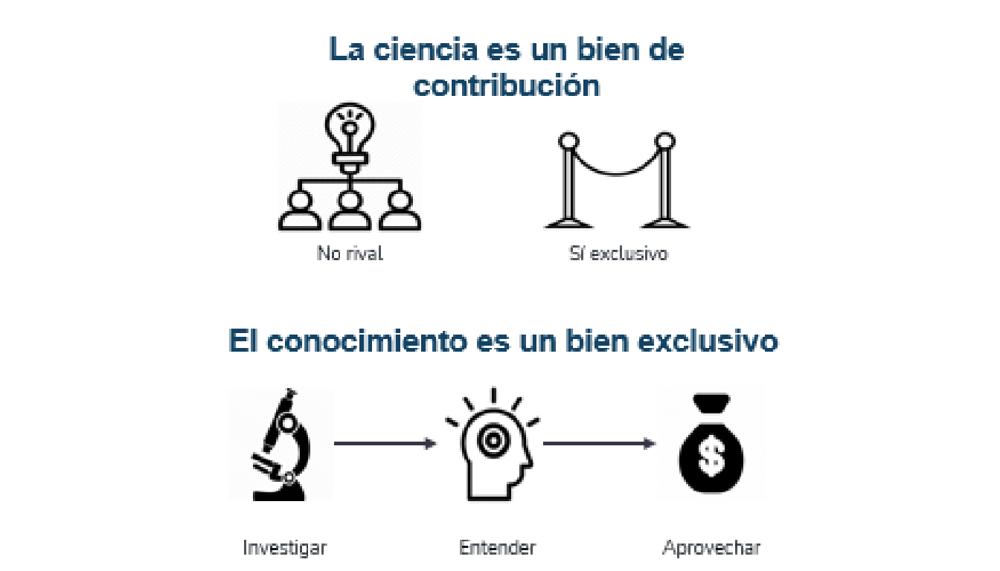
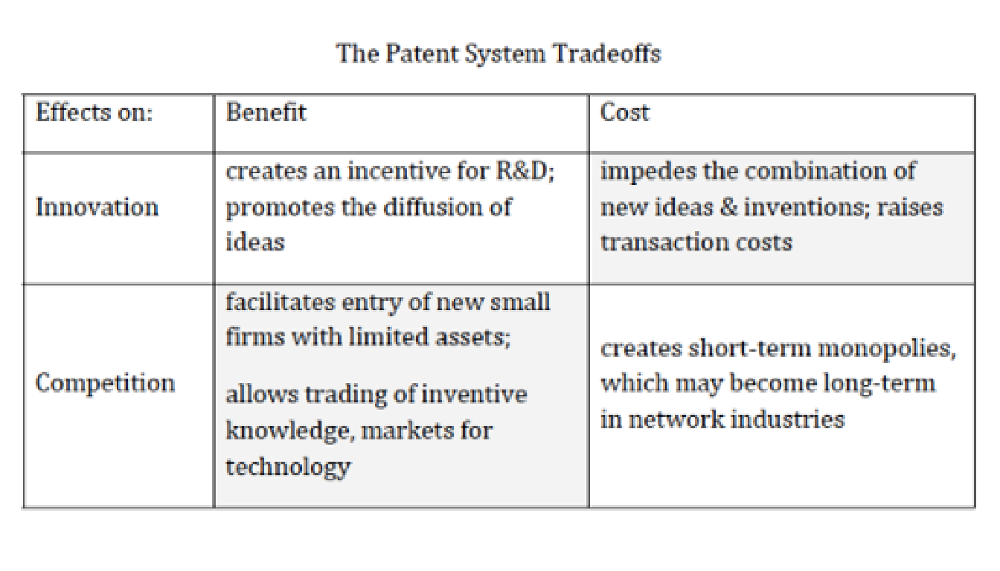
Existen dos impactos derivados del poder de mercado de los productores de tecnología:
En el impacto positivo hay un efecto de equilibrio parcial que aumenta las ganancias de los innovadores exitosos.
El impacto negativo es más sutil pues reduce la habilidad para competir, pero aumenta el incentivo para participar en programas de cabildeo.
Además, las patentes existen como sustituto a un secreto socialmente costoso de comercializar.
Si el secreto puede seguir siendolo por mucho tiempo, no hay incentivos a hacerlo patente. Es mejor hacerla patente cuando es un poco más fácil de que se sepa.
Algunas empresas, como Windows, les piden a sus empleados no investigar sobre otras patentes a fin de que la innovación sea completamente nueva.
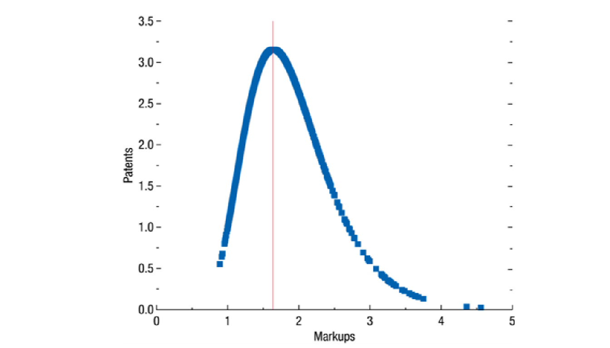
-“The America Invents Act, Patent Priority, and Supplemental Examination”, (Bird, 2013)
En el mundo:Trade-Related Aspects of Intellectual Property Rights (TRIPS, 1995):
El Acuerdo sobre los ADPIC (TRIPS), artículo 27, establece requisitos mínimos de patentabilidad y no discriminación, con las excepciones que prevé el propio acuerdo. Los procedimientos y el alcance territorial dependen de cada jurisdicción.
El artículo 33 de los ADPIC exige que el plazo disponible no termine antes de 20 años contados desde la fecha de presentación de la solicitud.
Anteriores:
Convención de París para la protección de la propiedad industrial, 1883.
Tratado de cooperación de patentes. 1978.
-“The America Invents Act, Patent Priority, and Supplemental Examination”, (Bird, 2013)
America Invents Act (2011): Es el cambio más significativo en la ley de patentes en EEUU con la finalidad de acelerar el proceso de patentes para que el proceso sea lo más eficiente posible.
Cambio de prioridad: la AIA sustituyó el sistema de primero en inventar por el de primer inventor en presentar la solicitud, aplicable según la fecha efectiva de presentación de la invención reivindicada.
AIA le dio a Oficina de Patentes y Marcas de EEUU (USPTO) la autoridad para priorizar aplicaciones de patentes para productos, tecnologías, o procesos que son importantes para la economía y la competencia económica.
First-inventor-to-file: las disposiciones entraron en vigor el 16 de marzo de 2013. Se aplican los requisitos de autoría, prioridad y excepciones correspondientes; véase USPTO, recursos FITF.
Examinación suplemental: nuevo procedimiento después de la emisión de la patente donde se pide al USPTO considerar, reconsiderar o corregir una examinación relevante de la patente para que puedan corregir omisiones o errores hechos durante la aplicación de la patente.
-“Recent Research on the Economics of Patents” (Hall y Harhoff, 2012)
Litigio de patentes:
En Estados Unidos cualquier tercero puede solicitar un nuevo examen de una patente durante su vigencia.
Los costos de litigio son importantes:
Partes con muchos recursos financieros pueden amenazar a quienes tienen menos recursos.
Puede desanimar I&D: Lerner (1995) documentó este fenómeno para la biotecnología.
-“Recent Research on the Economics of Patents” (Hall y Harhoff, 2012)
Divulgación del conocimiento: Patentar es atractivo cuando se puede realizar ingeniería inversa de un producto.
Patentes como señales para inversionistas: Las patentes como derechos de propiedad de activos intangibles pueden ser señales para los inversores de que una empresa de nueva creación tiene activos valiosos incluso con ausencia de ganancias en ese momento.
Efectos
En innovación de software: Open source
En investigación académica
Conclusión: Publicar y patentar son actividades complementarias (Azoulay 2009; Breschi 2007; Carayol 2007; Fabrizo y DiMinim 2008)
-“Patent valuation within the context of patent auctions” (Mattei, 2009)
¿Por qué es necesaria una buena valuación de patentes?
Uso adecuado como colateral en operaciones crediticias.
Reflejar en el valor de una empresa el valor de las patentes que posee.
Inclusión de activos intelectuales en las medidas de actividad económica (PIB).
Información clara sobre las oportunidades de compra para los posibles compradores de patentes.
-“Testing patent value indicators on directly observed patent value. An empirical analysis of Ocean Tomo patent auctions” (Timo Fischer & Jan Leidinger)
¿Qué determina el valor de una patente?
Ocean Tomo: brinda servicios de transacción y subasta de patentes.
Proceso de subasta nos permiten observar el valor privado de la patente.
Determinantes: Calidad tecnológica (citas posteriores), tamaño familiar de una patente (relevancia económica) y alcance (International Patent Classification)
-“Testing patent value indicators on directly observed patent value. An empirical analysis of Ocean Tomo patent auctions” (Timo Fischer & Jan Leidinger)
Calidad tecnológica (citas posteriores):
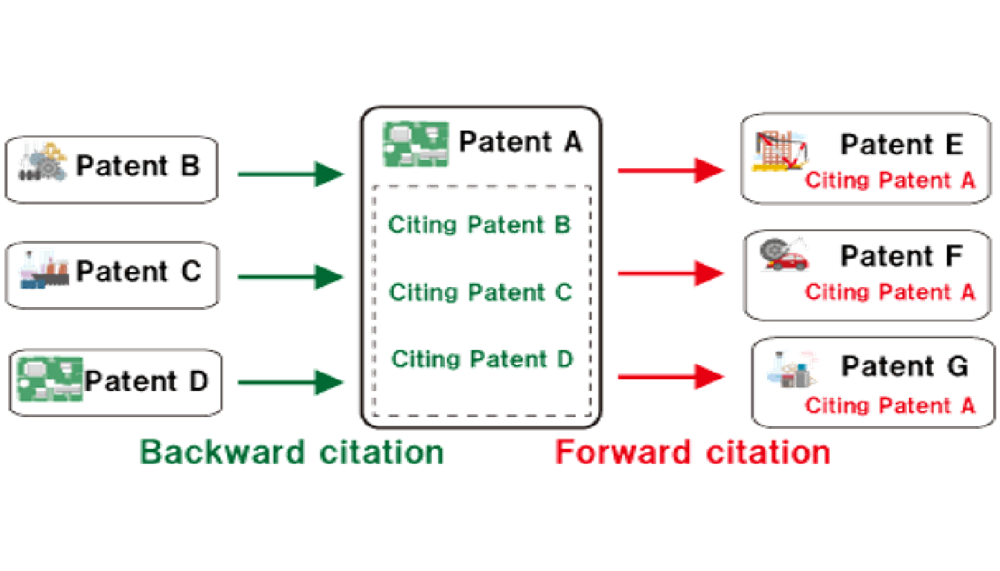
-“Testing patent value indicators on directly observed patent value. An empirical analysis of Ocean Tomo patent auctions” (Timo Fischer & Jan Leidinger)
Tamaño familiar de una patente (relevancia económica):
Definición: Número de jurisdicciones en las que se buscó la protección de una patente para el mismo invento.
El costo de incurrir en la patente implica que habrá un beneficio más adelante.
Entre más costos se haya incurrido (número procesos de patente), mayores deberían ser lo beneficios.
-“Testing patent value indicators on directly observed patent value. An empirical analysis of Ocean Tomo patent auctions” (Timo Fischer & Jan Leidinger)
International Patent Classification (alcance):
El IPC es una clasificación establecida por el Arreglo de Estrasburgo de 1971 que ordena las patentes según el área de uso que tienen (Agricultura, Ganadería, etc).
Si una patente pertenece a muchas clases, dicha patente tiene un mayor alcance.
La IPC tiene ocho secciones principales y múltiples niveles de clasificación. Una patente puede recibir varios símbolos según sus características; el número de símbolos no mide por sí solo el alcance jurídico. OMPI, estructura de la IPC.
-“Testing patent value indicators on directly observed patent value. An empirical analysis of Ocean Tomo patent auctions” (Timo Fischer & Jan Leidinger)
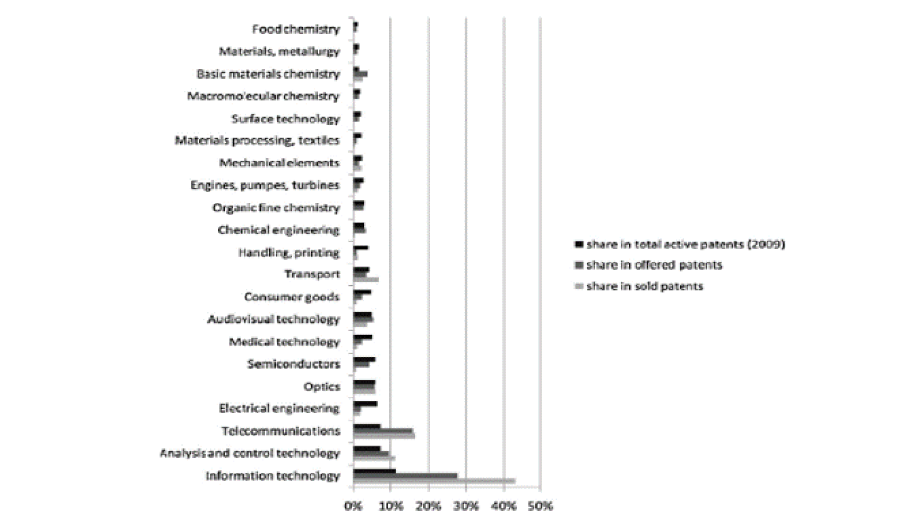
-“Testing patent value indicators on directly observed patent value. An empirical analysis of Ocean Tomo patent auctions” (Timo Fischer & Jan Leidinger)
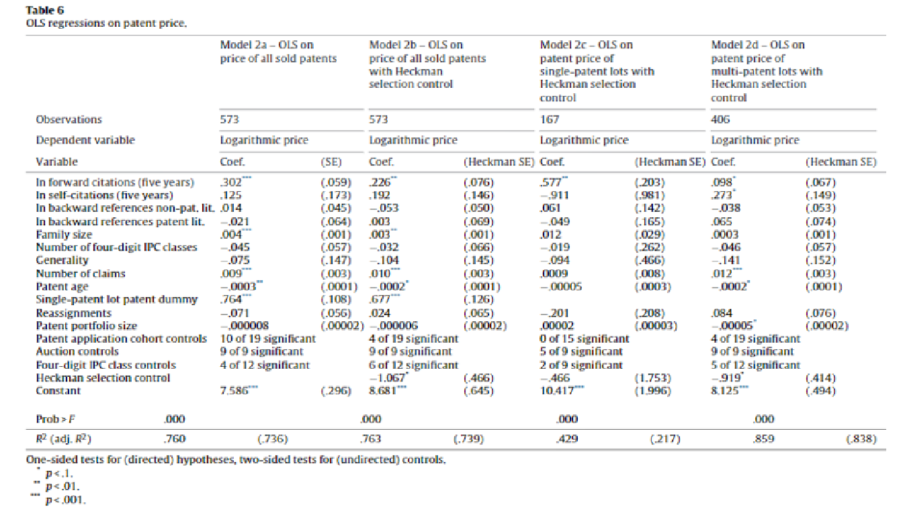
-“Patents and innovation: Evidence from Economic History” (Moser; 2013)
¿Qué tan importante es la protección de patentes para proporcionar incentivos para la innovación?
Patentes: Son la medida estándar de innovación.
Sin embargo, los datos de patentes pueden no capturar la innovación que ocurre fuera de la patente.
Países sin leyes sobre patentes
Inventores confían en mecanismos alternativos.
Secretos y tiempo de entrega
Evidencia empírica de la historia económica puede ayudar a responder lo que los datos modernos no.
-“Patents and innovation: Evidence from Economic History” (Moser; 2013)
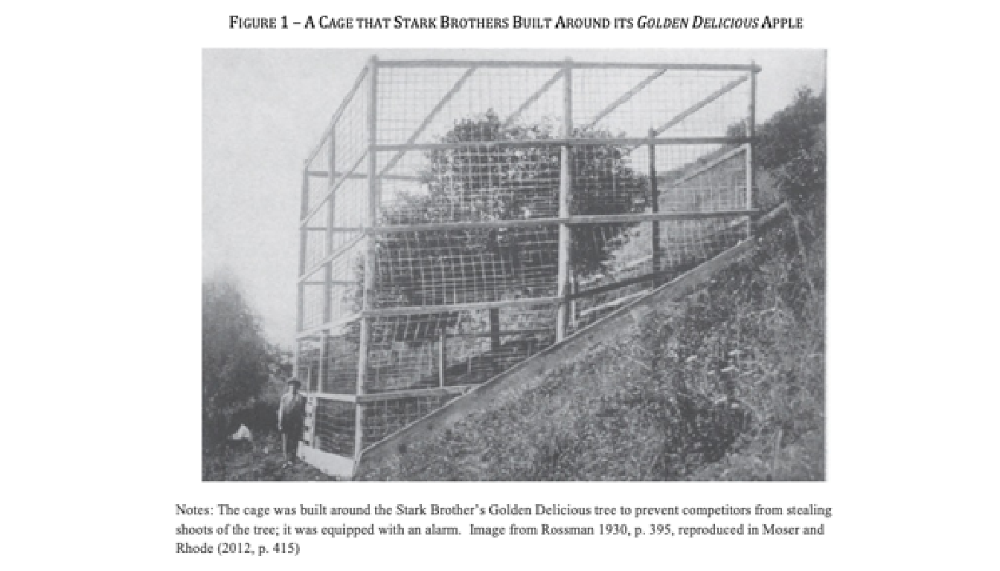
-“Patents and innovation: Evidence from Economic History” (Moser; 2013)
Leyes de patentes y la difusión de la innovación:
Los competidores pueden estar más dispuestos a revelar información técnica a los competidores si se sienten protegidos por una patente.
Al crear derechos de propiedad intelectual sobre ideas, las patentes pueden facilitar la innovación a través del aprendizaje acumulativo.
-“Patents and innovation: Evidence from Economic History” (Moser; 2013)
¿Cómo puede la política económica modificar los sistemas de patentes para hacerlos más efectivos?
Existen algunos problemas con los sistemas de patentes:
Dificultad de definir los límites cubiertos por una patente.
Grupos de patentes: permiten a un grupo de empresas combinar sus patentes evitando bloqueos y guerras de patentes.
Desperdicio social: Investigación duplicada y patentes estratégicas.
1917: Grupo Wilbur Wright Company y Curtiss Company: Después de que se formó el grupo, la producción estadounidense de aviones aumento de 83 en 1916 a 11,950 en 1918. (Bittlingmayer, 1988)
-“Patents and innovation: Evidence from Economic History” (Moser; 2013)
¿Cómo puede la política económica modificar los sistemas de patentes para hacerlos más efectivos?
En ausencia de una regulación efectiva, los grupos de patentes pueden influir no solo en los niveles, sino también en la dirección del cambio tecnológico.
Un mecanismo alternativo para modificar los sistemas de patentes es la licencia obligatoria, que debilita el poder de monopolio de las patentes al otorgarles licencias a empresas competidoras.
Los accesos a estas licencias pueden no ser inmediatos: países evitan desplazar el desarrollo de las patentes.
Aunque con retraso, estas licencias pueden fomentar la investigación nacional.
-“Patents and innovation: Evidence from Economic History” (Moser; 2013)
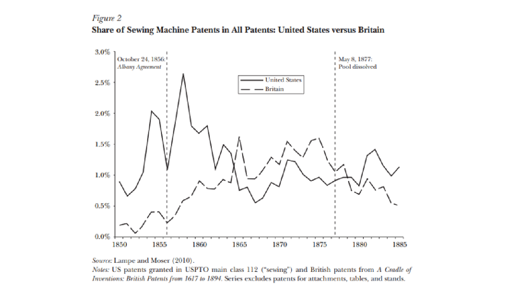
-“Patents and innovation: Evidence from Economic History” (Moser; 2013)
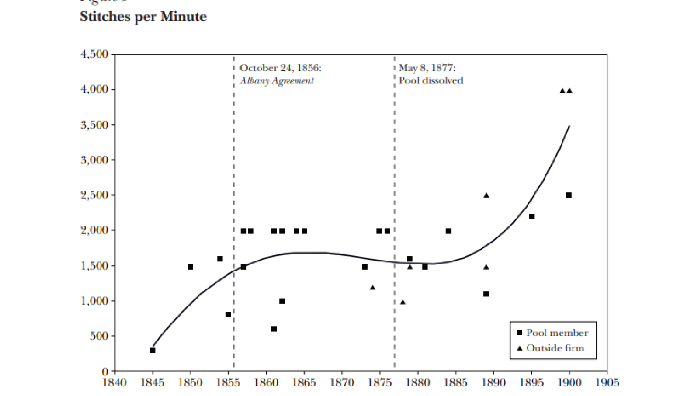
-“Patents and innovation: Evidence from Economic History” (Moser; 2013)
Conclusiones
Críticos:
El uso de estratégico de las patentes para detener a los competidores y extraer los derechos de licencia amenaza la efectividad de las patentes como un medio para fomentar la innovación.
-“Effects of copyrights on science. Evidence from the WWII book republication program” (Biasi, Moser; 2018)
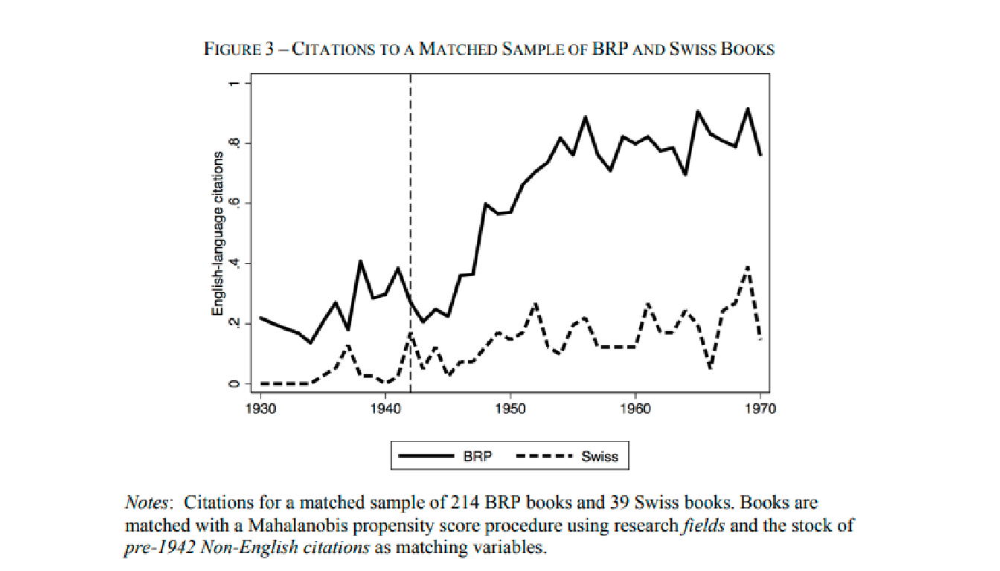
-“Climbing atop the Shoulders of Giants: The Impact of Institutions on Cumulative Research” (Furman; 2011)
Para servir como base para el crecimiento a largo plazo, la investigación científica y el progreso tecnológico deben ejercer un efecto indirecto intertemporal positivo.
No solo es importante la cantidad de conocimientos que se genera.
Calidad de los mecanismos para almacenar el conocimiento
La fidelidad del conocimiento
Costos de acceso al conocimiento
Las instituciones y políticas públicas se sugieren como elementos centrales del proceso acumulativo.
-“Climbing atop the Shoulders of Giants: The Impact of Institutions on Cumulative Research” (Furman; 2011)
Contribución de esta investigación: proporcionar evidencia estadística del impacto de una institución (Biological Resource Centers - BRCs) sobre la acumulabilidad de conocimiento.
BRCs: Instituciones a través de las cuales los científicos pueden obtener materiales para propósitos de investigación.
Centrales para el desarrollo de las ciencias biológicas
Recolectan, certifican y distribuyen organismos biológicos para su uso en la investigación.
Los materiales en las ciencias biológicas pueden ser de uso temporal (organismos vivos) y de difícil acceso.
-“Climbing atop the Shoulders of Giants: The Impact of Institutions on Cumulative Research” (Furman; 2011)
Impacto de las instituciones que mejoran la investigación en la difusión de conocimientos.
La difusión del conocimiento depende de instituciones que faciliten la transferencia de conocimientos a bajo costo entre las generaciones de investigadores.
Las instituciones pueden reducir los costos de acceso al conocimiento:
Mejoran la confiabilidad de las fuentes
Aumentan el tamaño total de las reservas
Las patentes universitarias o institucionales pueden ser más citadas/utilizadas en relación con un grupo de control de patentes generadas por laboratorios industriales.
-“Climbing atop the Shoulders of Giants: The Impact of Institutions on Cumulative Research” (Furman; 2011)
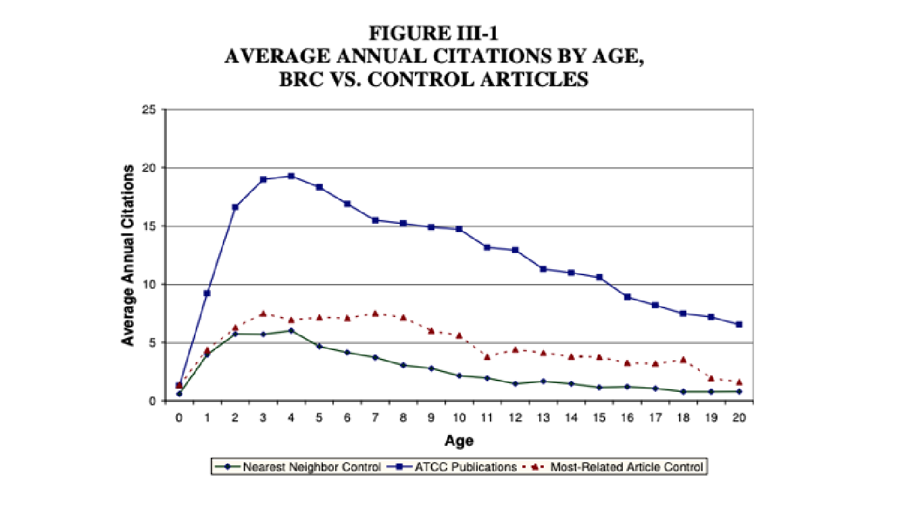
-“Climbing atop the Shoulders of Giants: The Impact of Institutions on Cumulative Research” (Furman; 2011)
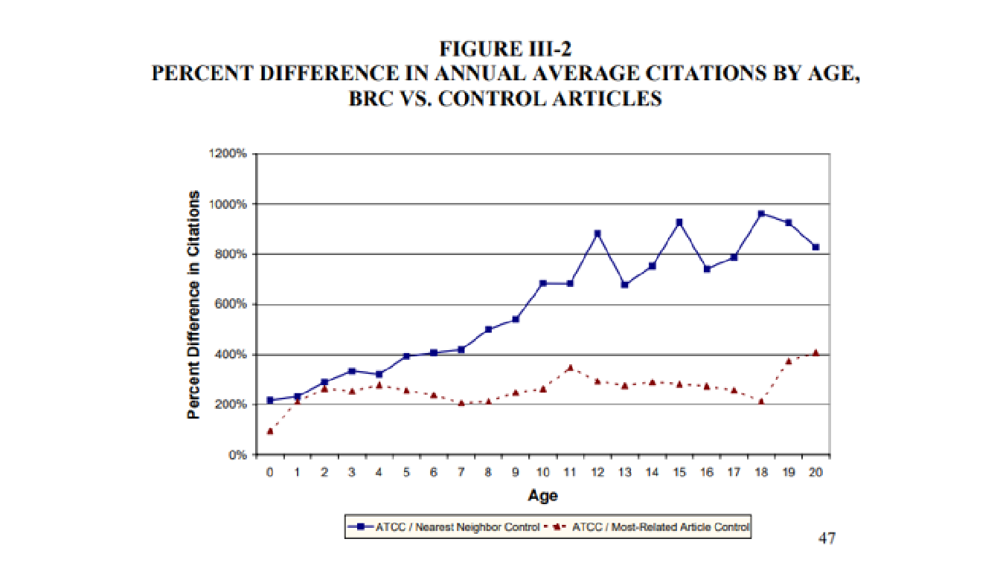
-“Climbing atop the Shoulders of Giants: The Impact of Institutions on Cumulative Research” (Furman; 2011)
Conclusiones:
Las instituciones facilitan el progreso científico y técnico aprovechando el potencial de una generación para servir como “semilla” de generaciones futuras.
Las BRCs impactan en la acumulación de investigación en las ciencias biológicas, mejorando el valor de los materiales que se recolectan.
Estos sistemas de acumulación de conocimiento tendrían que ser implementados en las otras ciencias de acuerdo a sus particularidades.
-“On Sharks, trolls and their patent prey” (Reitzig, Henkel, Heath; 2006)
Modelo de decisiones estratégicas con incertidumbre.
4 preguntas fundamentales:
¿Por qué existen los trolls de patentes?
¿Por qué ha aumentado su importancia?
¿Cuáles son las opciones de las empresas presa para combatirlos?
¿Cómo se puede abordar el problema desde la política pública?
Patent Sharks/ trolls: individuos o empresas que buscan generar ganancias a partir de regalías o indemnizaciones que obtienen por demandar a otras empresas por uso indebido de sus patentes.
En su mayoría son patentes insignificantes o con partes muy específicas.
-“On Sharks, trolls and their patent prey” (Reitzig, Henkel, Heath; 2006)
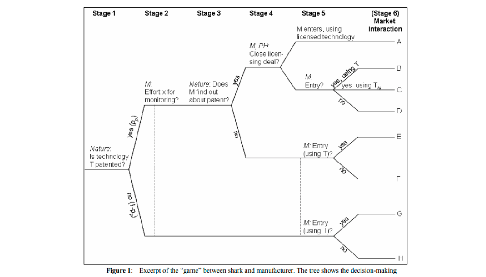
-“On Sharks, trolls and their patent prey” (Reitzig, Henkel, Heath; 2006)
¿Por qué existen? 2 razones principales: (i) es legal, (ii) es rentable.
¿Por qué ha aumentado su importancia? La fórmula para calcular las compensaciones genera incentivos a que los dueños de las patentes se dejen infringir.
Opciones de las empresas para combatirlos: Aumentar el monitoreo y regulación
Política pública: La indemnización tiene que reflejar el daño verdadero del uso de la patente e incluir costos hipotéticos de invent around
-“Can Patents Deter Innovation? The Anticommons in Biomedical Research” (Heller, Eisenberg; 1998)
Tragedia de los comunes: los agentes económicos tienden a sobreutilizar los recursos escasos compartidos.
Tragedia de los anticomunes: los agentes subutilizan recursos compartidos debido a que muchos otros agentes los pueden excluir.
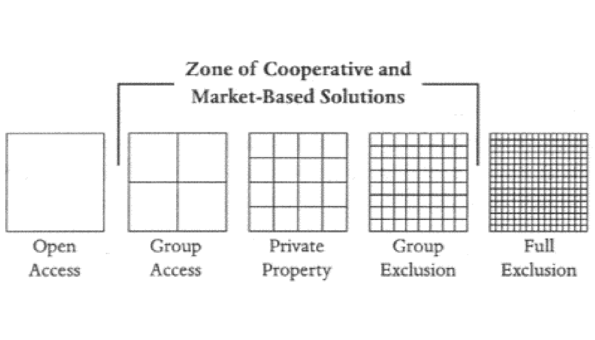
-“Can Patents Deter Innovation? The Anticommons in Biomedical Research” (Heller, Eisenberg; 1998)
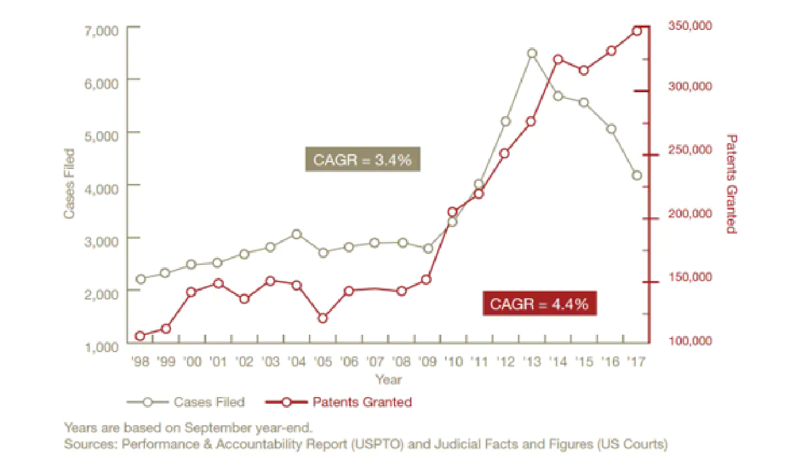
Problemas con los grupos de patentes: costos de transacción, intereses heterogéneos y sesgos cognitivos
Causas: fragmentos concurrentes y licencias de apilamiento (stacking licenses).
Consecuencias: obstáculo para nuevos productos y se desarrollan proyectos menos rentables.
-“The Case Against Patents” (Boldrin y Levine, 2013)
A pesar de que el argumento general a favor de las patentes es que incrementan la innovación y la productividad, los autores indican que no hay evidencia empírica que concluya que las patentes sirven para mejorar la innovación y la producción.
El fortalecimiento del régimen de patentes aumenta el número de patentes y no la innovación.
El efecto en la innovación podría ser negativo.
El sistema actual de patentes sirve más a los intereses de un gremio que a los de la eficiencia económica.
Efecto del primer competidor (first mover)
-“The Case Against Patents” (Boldrin y Levine, 2013)
Economía política de las patentes:
Según Boldrin y Levine, en la realidad no se ve eso: las actividades ya no son innovadoras.
Los abogados de las patentes juegan un papel muy importante.
Leyes diseñadas para perpetuar poder monopólico.
En el caso de Amazon, una de sus patentes por mucho tiempo fue el método de comprar productos en línea y se preservó durante años por el cabildeo realizado.
-“The Case Against Patents” (Boldrin y Levine, 2013)
Conclusiones: de manera particular, los autores proponen ocho formas de mejorar el sistema de patentes:
Tiempo limitado
Revisar “qué puede ser patentado”
Que las patentes sean limitadas cuando éstas estorben la innovación
Revisar las agendas de organizaciones internacionales
Estudiar más los sectores
Tomar en cuenta la evidencia económica
Prohibición de patentar cuando exista subsidio federal por investigación
Depender de otros incentivos